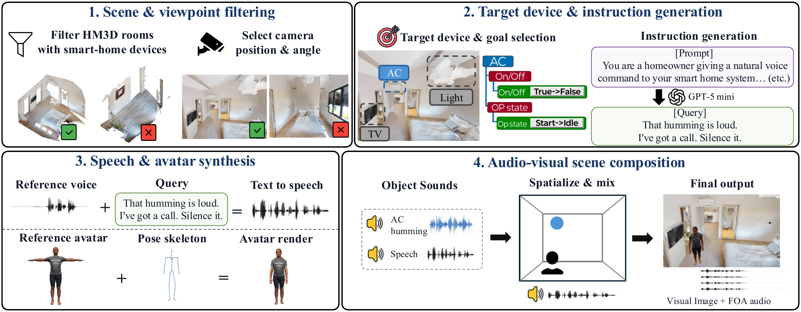

G0 / SPEECHDEMO 01 / 05
Speech-grounded (G0)
The target is resolved from the spoken utterance through correct speech recognition.
MULTIMODAL SMART-HOME BENCHMARK
A Multimodal Reasoning Benchmark
for Smart Home LLM Agents
Anonymous Authors
“Human intent goes beyond words. Smart-home agents should, too.”
01 / DEMONSTRATIONS
01 / 05 · Speech
02 / OVERVIEW
OmniSmartHome is a multimodal smart-home benchmark in which fulfilling a user’s instruction requires combining evidence scattered across multiple modalities.

OmniSmartHome contains 1,360 synthetic and 272 real-world episodes. Every episode provides visual observations paired with spatial audio, along with textual metadata about rooms, devices, and the home environment. To successfully resolve such requests, an agent must perceive task-relevant information in visual and acoustic observations and aggregate this evidence to infer the user’s intended target device.
03 / BENCHMARK
Each episode is characterized by a grounding type, a query type, and a feasibility type.


We select HM3D rooms containing suitable home devices and camera viewpoints that provide clear visibility of each room.
We select a target device and goal, then use an LLM to generate the corresponding user instruction query.
We render a humanoid avatar with a natural pose and synthesize the user query using text-to-speech (TTS).
We use SoundSpaces 2.0 to compose the visual scene and spatialize speech and device sounds into a FOA recording.

“Hey, can you tell me the, uh, vendor name of the microwave in the, uh, kitchen?”

“Hey, start, start running the dishwasher in the kitchen in the, uh, kitchen now.”

“switch the, I mean, schedule the, the audio player in the living room to turn on in 15 minutes, do not turn it on now.”

“Ugh, the living room feels too bright. My eyes keep squinting and they feel tired after just a few minutes.”
“What's the current level of the dimmable light in the living room?”
“Please turn on the light in here.”
“in 5 minutes, Turn on the microwave in the kitchen and get it running.”
“The air in the kitchen feels kinda dusty.”

“What level is this at right now?”

“Turn this on, set this to quick normal, and start this running.”

“In nine minutes, switch this to KBS2.”
“What’s the product name of that?”
“Turn that on and set it to cooling mode.”
“In 10 minutes, power this on.”

“Hey, how much time is left on that device making electronic music?”

“Silence the device making the alarm beeps now”

“Schedule setting the volume of the device that is playing that music to 10 percent in 27 minutes and do not set it now.”
“What’s the product name of the device making that beeping sound?”
“Hey, the device making the sharp alarm beeps, silence it now”
“in 5 minutes, Stop the device making that melodic chime now so it is no longer running”

“Can you tell me the vendor name of the device making the sound on my right?”

“Stop the device making that sound on my right and a little lower down so it is no longer running.”

“Schedule the one in front of me to turn on in 11 minutes and do not turn it on now.”
“What’s the vendor name of the device making that sound on my left ?”
“Hey, turn off the device in front of me.”
“In 5 minutes, turn the device on my left on, set it to delicate mode and have it running.”

“Which robot-vacuum phases does the RVC in my room support?”

“Turn on the air conditioner in my room, set it to cooling and the fan to fifty percent.”

“Before I head out, power off the microwave in my room exactly 19 minutes before dishwasher in the home office finishes cleaning.”

“My room is too bright.”
“What's the vendor ID of the AC in my room?”
“Turn off the humidifier in my room now.”
“In 10 minutes, turn on the dimmer light in my room and set it to 90 percent.”
“The air feels kind of dusty and my throat is a bit scratchy in my room.”
01 / 05 · Speech
04 / METHOD
PROcedural Memory for multimodal Evidence gathering.
A lightweight agentic baseline for adaptive evidence acquisition.
PROME equips the agent with a set of multimodal perception tools and augments its reasoning with procedural memory that captures reusable strategies for resolving grounding ambiguities.
The perception tools extract audio, visual, and spatial evidence through speech recognition, sound localization, pointing, and identity matching. The procedural memory guides tool invocation and the integration of tool outputs.

For memory construction, we use 680 synthetic training episodes from the HM3D training split.
We prompt an Omni-LLM to group training episodes by grounding ambiguity type and generate a natural-language description for each group as its retrieval key.
We initialize the policy logits using a hand-specified cost prior and per-tool bonuses estimated by comparing reference rollouts with and without perception tools.
We add a memory-guided rollout and refine the policy using episode-level grounding rewards, applying a single policy-gradient update after rolling out the training set once.
The policy selects the next tool action conditioned on the agent’s current grounding state. The state summarizes the evidence acquired thus far and the remaining uncertainty.
At the beginning of each episode, the agent uses the multimodal input to retrieve the most relevant grounding schema from the procedural memory bank.
After each ReAct step, the agent updates its grounding state, samples the next tool action, and injects a brief [GROUNDING HINT] before the next reasoning step.
The agent calls Device Declare to record the inferred target device, then calls Finish to terminate the episode and return the final textual response.
05 / RESULTS
PROME improves overall grounding and goal accuracy across all six backbones.
Mean grounding accuracy gain
Mean goal accuracy gain
Backbones with gains in both metrics
| Backbone | Grounding accuracy ↑ | Goal accuracy ↑ | ||
|---|---|---|---|---|
| Baseline | + PROME | Baseline | + PROME | |
| Qwen2.5-Omni | 33.0 | 38.2 +5.2 | 17.6 | 22.4 +4.8 |
| Gemma4 | 50.6 | 74.0 +23.4 | 25.2 | 59.3 +34.1 |
| Nemotron3 | 62.7 | 65.2 +2.5 | 44.5 | 49.1 +4.6 |
| Qwen3-Omni-Think | 65.9 | 70.2 +4.3 | 48.4 | 53.9 +5.5 |
| Gemini-2.5-Flash | 73.7 | 78.2 +4.5 | 56.2 | 62.3 +6.1 |
| Gemini-2.5-Pro | 81.0 | 85.0 +4.0 | 63.1 | 69.2 +6.1 |
Grounding accuracy measures whether the declared device matches the ground-truth target. For infeasible queries where the target device does not exist, the agent is expected to declare no target.
Goal accuracy measures whether the agent satisfies the requested goal. Feasible Q2–Q4 queries are evaluated using the final simulator state; Q1 and infeasible queries are evaluated using an LLM-as-a-judge.